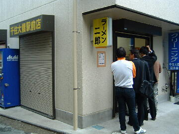
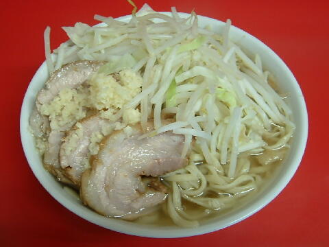
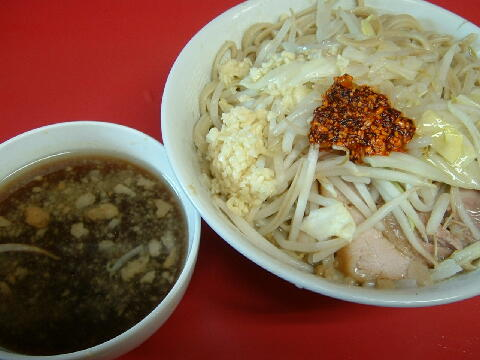

足立区 千住橋戸町 10-8
日・木・祝（不定休）
11：00〜17：00
土 11：00〜15：00
臨時営業の場合 11：00〜14：00

小ラーメン 750円、小豚 900円、小豚ダブル 1000円
大ラーメン 850円、大豚 1000円、大豚ダブル 1100円
生たまご 50円、辛味（別皿） 100円
店員は、将来頑固親父になりそうな店主がひとり。
コショウ、一味。
レンゲ無。ティッシュ、ポケットティッシュ有。名刺は券売機内に有。
BGMは、FM。
トッピングは、二郎標準。ラー油があるときもある（Twitterで告知）。
千住は食券を買ってから行列に並ぶ。
15時からの裏メニューがある（Twitterプロフィール欄参照）。
ラーメン二郎 千住大橋駅前店 千住大橋駅前店のTwitter
「ラーメン二郎 千住大橋」でヤフー検索
「ラーメン二郎 千住大橋」でヤフーリアルタイム検索
「ラーメン二郎 千住大橋」でグーグル検索

小豚 ニンニク
麺は、ショッパウマのスープをよく吸い飴色に輝くデロ気味の麺。硬めはできない。
ぶたは、程好く味の染みた分厚くて柔らかい関内超えのフワホロ＠ぶた。
スープは、濃い目の醤油と二郎の旨味が詰まったアブラたっぷりのかなり凶暴なもの。
ヤサイは、モヤシ9：キャベツ1の割合。ホクホクでシャキシャキ。
ニンニクは、程よいからみの中粒ニンニク。
2016年、千住大橋店、覚醒!!! すげ〜美味いっス!!! 近くの人が羨ましい!!!

小ラーメン ニンニクラー油 SIRUSUTE ネギ油
SIRUSUTE（略してSS）は無言で食券に50円を添えるとやってくれる、15時からの裏メニューである。
まず通常のラーメンが作られる。
ここでラーメンに対してのトッピングをきかれる。この時に決してSSの油の有無を指定してはいけない。
次にラーメンの汁が小丼（写真左）に移される。
この時点でSSの油（油の種類は時期によって異なる）をきかれる。油無もできる。
指定の油がかけられて提供される。
ＰＣ店